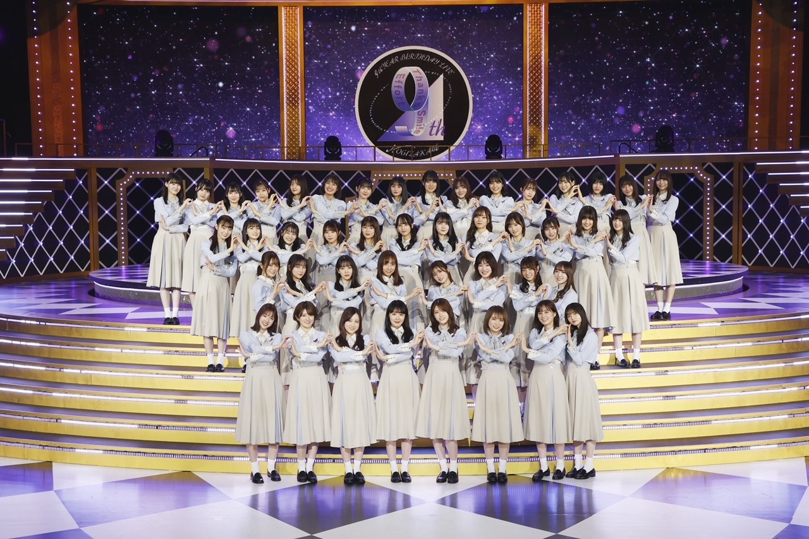
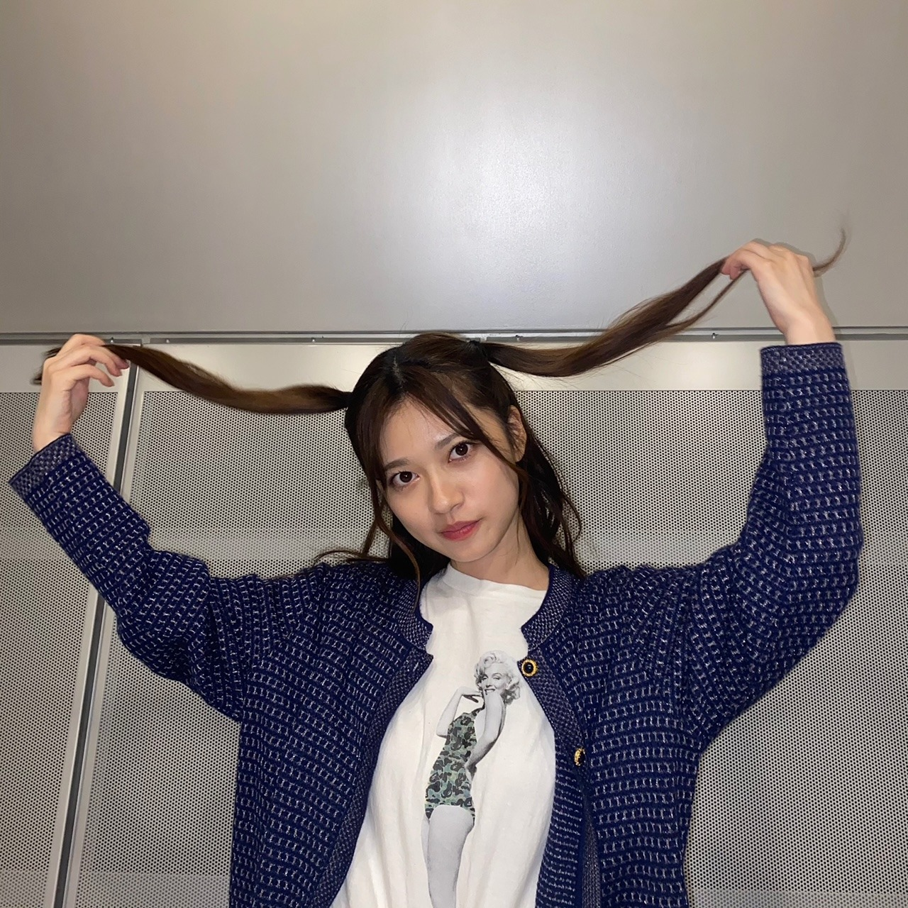
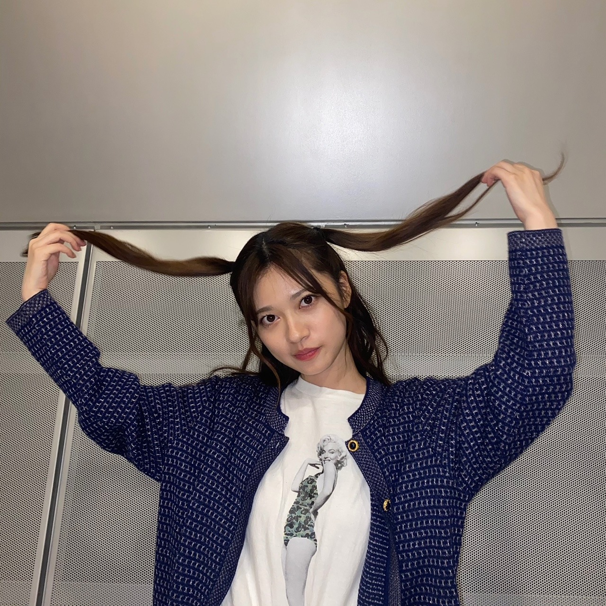

2021/0302Tueランプ
birthdayLive
ありがとうございました。✨
1年って長いような短いような
去年の事今でも鮮明に覚えています。
大変だったこと
嬉しかったことも
くだらないメンバー同士の会話も
前夜祭で秘蔵映像など観ながら
しっかり振り返ってもらった時
当時は長丁場のLiveと言うこともあり
覚えることの膨大さ
初めての経験も多くその分不安もあったり
体力面でも持つのかなーとか
とにかく不安なことの方が多かったのですが
振り返ってみると
あの場に入れたことの素晴らしさや
本当にいい経験だったと
今までも噛み締めていたつもりではありましたが
より気づけました。
しかも、あんなに映像も残っている事も
恥ずかしいけど幸せ者だと感じました。
本当にありがとうございました。☺️
改めて乃木坂46を宜しくお願い致します。✨
乃木坂お試し中
ありがとうございました。
まさかの台本に書いてあって知ったのですが
その名の通り本当に何も決まっていないらしく
普通ならあり得ないことかもしれませんが
私自身しっかり作り上げられ決められた環境よりも
自分達で意見して作り上げる
ものづくりなど
そう言う環境の方がすごくワクワクする性格なので
メンバーの個性をもっと活かしたり
自由度の高い楽しい時間になればいいなーと
ミーグリも本当にありがとうございました。✨
他にも書くことがある気もしましたが
ひとまず。！！
 

コメント(379)
今日もメールを送ってくれて有難う！
蘭世ちゃんのメンバーが好きって言う話は微笑ましいです^-^
蘭世ちゃんが幼い頃からちゃんと自分の意見を持っていたり、落ち着いている雰囲気がありますからお姉さんメンバーには対等な気持ちで話せると思う。
その扱いをしてもらえるのは嬉しいですが少しもどかしいと感じる時はありますね(..)
私も家庭では長男だから蘭世ちゃんの甘えたくなる気持ちにはすごく共感できます！
明日私はお仕事のでミーグリには参加できないですが参加する皆さんも蘭世ちゃんも良き思い出が作れることが出来るといいですね^-^
今日もお疲れ様でした！
何して過ごしてらっしゃったのでしょうか？
そろそろライブ準備も始まる頃でしょうね。
この時期は暖かくなったと思ったら急激に冷え込む時があるので体調にはお気をつけ下さいね。
今日もモバメありがとうございます！
ファン目線の勝手な妄想ですが、らんぜさんはいつも正直で嘘のないお人柄なので、相手も自然とらんぜさんとおなじように正直になるのだと思います。
生駒さんがらんぜさんにお話ししていたというのもそういう面だと思います。
甘え上手な人を見ると羨ましくもなりますがらんぜさんみたいな方もグループにとって欠けられない存在だと思います。
ただやっぱりたまには甘えたくなりますよね。
甘えられる先輩の存在って大きいですよね。
大切にしてください^_^
ミーグリは来週お邪魔しますよろしくお願いします^_^
蘭世さんおやすみです
今日のミーグリは不参加で仕事です、、、
仕事頑張るぞー
ミーグリ楽しんでね！
来週の日曜日は5部に参加するよー
少しだけ、、、
らんぜー、
おやすみ。
おはようヾ(≧▽≦)ﾉ最愛なる蘭世
今朝は変な時間に目が覚めてしまって。
寝れなかったから、アマゾンプライムを見たら『星の王子ニューヨークへ行く』の続編が配信されてて観てたらこんな時間(≧▽≦)
もう30年以上も前の作品の続編。
内容は個人的にはちょっと薄いかなって思うけど、出てるキャストが結構豪華なんよね。
昔この映画が好きで何回も何回も観てたわ。
まぁエディ・マーフィが好きだったってのもあるんだけどな。
いや～でもエディ・マーフィは30年経っても年取ってないんちゃうって感じだったな～笑
なんか続編みたら前作も観たくなるわ。
今日はもうこのまま起きといてお仕事行こう。
いつもの音楽聴きながらコンポタ飲んで～でまたツナのトーストたべて～で時間があるからまた『乃木坂お試し中』みて仕事行こうかな(´▽｀*)
蘭世
楽しい時間を過ごしてな！
それじゃ今日も沢山笑って過ごせる一日なりますように
今日も出会う方々や頂けるお仕事に感謝して初心を忘れずに楽しんで笑顔で居られる日にしよう。
産んで育ててくれた御両親にも常に感謝を…
じゃきっとまた後で(´▽｀)
いってらっしゃい！
ミーグリに準備できたか？
頑張ってね
絢音ちゃんと
ツーショあったら、見たいね ^^
今年、軍団の活動も楽しんでるよ
軍団の活動に
らんぜぴんの笑顔が輝いて
めちゃお気に入りなので、
また見たい
またコメントする
I love you <3<3<3
2021.03.06 07:33
今朝はらんぜ早起きだったに違いありませんね。おつかれさまです、まだひえびえする朝ですよね、おなかを冷やさないようにお気をつけてくださいね(^^)b
きのうのよる、コメントで、らんぜは今日のお洋服もう決めたのかな〜？と、書いたのですが、そうか今日は全国の方だから、お衣装の方で、、ということになるのでしょうかね！？握手会のときはそんな感じでしたものね、、、
ならばなおさらおなかを冷やしませんように、毛布などくしして、どうか1日元気でらんぜがいられますように、、、
今日も、らんぜをたくさん応援してます！
いっぱいいっぱーーい！気持ちを送りますよ、えいっ！そーれ！らんぜにとどけー！！
ごきげんよう、らんぜ。
また書きますね(^^)/〜
今日は全握のミーグリの日かあ！
残念ながら不参加やわあ
ファンとの交流を楽しんでねー
やぁ
メールありがとう！(*´▽｀*)
今日はミーグリやな。
楽しい時間をファンの方達と過ごしてな。
たくさんの方と仲良くなれますように
俺も朝からお腹空いてるから早めの昼ご飯今食べてる。
今日はハヤシライスやで！(*´▽｀*)
蘭世
ちゃんと食べれる時にしっかりと食べるんやで！
きっとまた後で(｡･ω･)ﾉ
仲良くしてくださいね ：D
今日は、ふと思いついた
私は、日本語と英語を自学して
だいたい22年くらいかな～
まだ勉強中やけどね
他の外国語も学びたい
今日は参加できないけど、
心から、応援してるからね
そいえば、13日にもあって、、、
今日は暖かくなってるけど、
明日また少し寒くなるようで（10度差）
体調にお気をつけてね
朝ごはん食べてなかったのか？
食事ちゃんととってね ＾＾
I love you <3<3<3
2021.03.06 11:58
朝はやくからおつかれさまです♪
メール、ありがとう(^^)d
おなかすいてるのね(^^)いいこといいこと♪あのほら、元気をチャージするやつ！あれを飲んで！いや、飲み物だけじゃおなか満たされないか〜、、、そうだ！いっぽんでまんぞくできるバー、みたいなの、らんぜ知ってるかな？ぶらっくさんだが、もちょっと大きくなったようなやつ。あれね、けっこうおなかたまるんだよ、一本で！さすが名前のとおりだね。でも、やっぱりおせんべえののようなものが、消化にはいいかな(^^)
わたしも今からお昼ごはんたべますね(^^)
お米と、明太子と、おつけものと、ひきわり納豆と、なんか四川麻婆豆腐みたいなの。電子レンジでできるやつなんだけど。めちゃくちゃ辛いのよコレ、、、
らんぜもマイペースで、楽しんで時間を過ごしてくださいね♪らんぜにお伝えしたいことあるから、また書きます♪らんぜが休憩時間に気分転換になるようなこと、書くからね〜(^^)d
では、ごきげんようです！らんぜ。
また書きますね(^^)/〜
やぁ
メールありがとう！(*´▽｀*)
良き性格(^^)
だから人として好きなんよね。
ほう！
女子率が高いのはええ事やな！(´▽｀*)
同性から褒められる人は魅力があるという事やからな。
同性にしか気付けない部分もあったりするだろうしな。
その自信がまた自分の財産にもなるからなええ事や！
もっともっと美意識を高めて自分の為に自分の魅力に気付いて行って欲しいな～(´ー｀)
良い目標やん！
大袈裟でもええやん。
自分のための目標やねんから。
自分がしっかりと自分の中で掲げてれば大丈夫。
きっとまた後で(｡･ω･)ﾉ
らんぜぴんの感想を
聞かせてくれてありがとう
楽しそう、良き良き
その目標いいやん
また聞かせてくださいね
2021.03.06 13:47
女子モテ蘭世ちゃん、楽しそう☺️
今日は全握ミーグリなんだね〜オイラはお仕事ですが(笑)
楽しい時間となりますように(´˘`＊)
ではではまた(´ｰ∀ｰ`)ฅきます
ゆうたーん より
アフタヌーンですね〜♪おつかれさまです。
メール、ありがとう！！
そうなの！よかった〜(^^) それはとっても嬉しいなっ♪らんぜがやりたいことには、おんなのこファンのちからがあれば、とっても心づよいから、らんぜが報告してくれたこと、とっても嬉しいな(^^)
その調子で、まだまだきょう1日良い1日となりますように、、、
ひきつづき、応援してますネ(^^)！
ファッションやメイクのお話しもできたら、いいね(^^)
あのね、今買おうかどうか迷ってるかばんがあってね、、、バッグって言っても、それ雑誌の付録なんだけど、、、外身がキルティングで手持ち肩掛けもできるマチのあるやつなんだけど、とってもいい感じなのよ！
でもほら、やっぱり表紙の小さな写真だけじゃイマイチよくわからないじゃない？そんなとき、ゆーちゅーぶに、、、
あるんだね〜！それがどういうものか開封して、こんなのですよ〜って、紹介してくれてる動画が(^^)これけっこう買う買わないに限らず、時々見てるのですが、便利だね〜いま、、、実際本屋さんで広げてあるのもあるけど、展示してないのは無理に引っ張り出せないものね^^;
タブレットも入れられるポケットもあって、マチもあるからかなりのモノが入れられそうなんですよ、、、なにしろデザインがすごくイイな〜って、思ってるんだよねぇ、、、
どうしよう？
らんぜはけっこうイイな、って思ったらその場で買っちゃいますか？いったん持ち帰って考えちゃう方ですか？わたしは〜、、、検討派です^^; よっぽどお得で残り1、とかじゃないと即買い出来ないんですよね〜勇気がねぇ、、、まぁ、無駄遣いは少なくなるよね。
さぁ、午後からも、らんぜが無事に、楽しくお話しをできますように。祈ってます。願ってますから！いまお外は、ビュービュー風が吹いてる、、、
ごきげんよう！らんぜ(^^)
また書きますね(^^)/〜
前夜祭、そしてバースデーライブお疲れ様でした。
懐かしいあの時を思い出しつつ今の乃木坂も楽しめた良いライブでした。
お試し中も有難うございました。感想はまた個別ミーグリででも伝えようかと。
２期生ライブに向け忙しいかとは思いますが、くれぐれもお体ご自愛ください。
では。
やぁ
メールありがとう！(*´▽｀*)
今日も元気か～(≧▽≦)
それは良かった！
俺は眠たい笑
二部もその後も沢山楽しんでな！
えいえいお～٩( ๑•̀o•́๑ )و
てか一個の話題を描いてるコメントがことごとく弾かれてるな…
何の言葉がひかかてるんかな～？
まぁまた書くけど笑
きっとまた後で(｡･ω･)ﾉ
僕は元気ですよ〜
今日のミーグリ行きたかったな〜
でもでも21日のミーグリには行くので待っててくださいね！
やぁ
メールありがとう！(*´▽｀*)
もうなんや笑
俺的にはまだ３部？って感じやった笑
握手会ないと部ごとの時間の感覚がない笑
おお！それはツインテ好きなファンは喜ぶな！(≧▽≦)
俺は高めのポニテが良かったけど( *´艸｀)笑
楽しみにしてるで～
後程～(^^)/
きっとまた後で(｡･ω･)ﾉ
女の子ファンが多いのは嬉しいですね！！
おつかれさまです〜！
メール、ありがとう(^^)d
はやいですね、もう3部ですかっ！げんきでいるようで、良かったです(^^)b
ツインテールのらんぜのお写真、楽しみにしてますね〜！！どうか、らんぜがわすれていませんように、、、
いまね、スマホでネットサーフィンしてたら、あいゆーさんのメイクに関するページが提示されてきて、それ読んでたんだけど、麗っていうファンタジー時代劇に出てらしたときのメイクを解説しててね、そしたら、ここに線を引いてとか、お鼻にも塗ったりするのあるんだね！なんか細かく解説してあって、メイクって奥が深いんだねぇ、ってすっごく感心してたの。
そしたらね、昨日コンビニ寄ったときのこと思い出して、男性用のBBクリームというやつを発見して、なんかそれを塗ると肌色をよく見せれるんだって！すごい、、そんなのあるんだね、、これ使いたいなーって、思っちゃった！でもやっぱイイお値段しましたから、すぐは買ってないんだけどね^^; 検討検討、、、
らんぜもこのあいだ、メールでいろんな海外のメイクとか研究、チャレンジしてみたいなーって、教えてくれてたよね(^^) なんかそういうのも、すごく楽しみにしてるよ(^^)b
全国ばんのミーグリって、個別のときより少し短いのかな？じゃあ、もうちょっと、もうひとがんばりってとこかな(^^)
らんぜ、マイペースに最後までラストスパート、良い時間を過ごせますように！
また書きますね(^^)/〜
ごきげんよう！
やぁ
メールありがとう！(*´▽｀*)
おお！可愛いやん！(≧▽≦)
てかこうしてツインテに見えないな笑
今日はMARC JACOBSセーターやったんやな(´▽｀*)
赤で音符が白でいいよな可愛いセーター蘭世
可愛いぞ！！(/ω＼)
逢いたくなるやん！！！！
きっとまた後で(｡･ω･)ﾉ
凄く綺麗です
いい写真をありがとう
ミーグリお疲れ様〜
なかなか合間でご飯食べれんわなあ(^_^*)
やっぱ赤色の服はよく似合ってるわ
需要ありありです。需要ありすぎます。
ネガティブは決して悪いことではないと思います。
ポジティブであること、自信もまた重要ですが！
でも自撮りが恥ずかしいという蘭世も可愛いです。
やぁ
メールありがとう！(*´▽｀*)
お腹すいてきたな。
もう晩御飯の時間や。
今日はかた焼きそばや(*´з`)
お！このツインテは大人っぽいツインテやな！(´▽｀*)
需要はありまくるやろ笑笑
ポニテ好きな俺にも需要があるんだから( *´艸｀)笑
もっと自分の綺麗さにポジティブにならないとな。
それをもっともっと気付かせてあげれるだけに沢山本心で言うていこう。
蘭世
まだまだ自撮り恥ずかし～ってなるんか可愛いな～。
俺のために撮って～(^_-)-☆
でもっと恥ずかし～ってなって笑笑
だけど、ホンマ蘭世
お気に入りのイヤリング(ピアス)も似合ってるし。
リップも良い感じの色だし。
あ～もう逢いたい！！(/ω＼)
逢って前みたいに目の前でその綺麗な瞳に写りたい！！
早く直接逢える世界になればいいのに。
３部も４部もツインテか(´ー｀)
沢山の人にいっぱい可愛いって言われるな( *´艸｀)
この後も楽しんで！
音が凄そうやなカシャカシャシャシャシャ～みたいに笑
てか前から連写で撮ってなかったっけ？笑
でも色んな角度で見れるのは良き！
今日はブレてないしな( *´艸｀)
きっとまた後で(｡･ω･)ﾉ
需要大ありですよ！！！
ありがとうございます！
お疲れ様
モバメの連写ありがとう
大事に保存する 笑
専用のフォルダまた成長してる ：D
先ほど、One Loveを聴いてたよ
好みがめちゃ似てる
らんぜぴんの毎回のANNを録音したよ
それらも専用フォルダに
以前にも
アニメや映画などをリピートして
日本語を自学してた
日本語の辞書の内容をノートに
単語ずつ全部書き留めだこともある
4、5千の単語やったかな～
英語も小さい頃から勉強した
学べば学ぶほど、
中国語と日本語と英語は
いっぱい共通点あるよ ：D
一時期、
関西テレビのアニメにはまってた
で、関西弁がめちゃわかってる
関西の方と一緒に仕事した時にも
なんとなく、同じアクセント出てた ：D
私、方言のアクセントが好きで
九州と四国のも少し研究した
で、
らんぜぴんはこっちに気を使わなくても
全然大丈夫やで
ホワイトディーのミーグリを楽しんでる ＜3
晩御飯食べた？
ちゃんと休もうね
お休みなさい ：）
2021.03.06 19：59


今日、花束みたいな恋をした観てきた！
恋愛映画あんまり観ないけど職場の人に
早よ観てこいって言われたので観てきた笑
明日はお仕事なのーー
ごめんね、という申し訳ない気持ちを
少しだけここらへんに置いておきますので、
明日一日楽しんでね◎
モバメとかインスタはチェックするので！